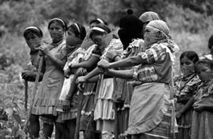

Diaries from the Barricades - from an unnamed Wobbly in Oaxaca
Submitted on Mon, 12/18/2006 - 3:12pm
By Nacho, November 14, 2006 - Originally posted at chiapaspeacehouse.org
SEPTEMBER 26, 2006
Firefight at the Camino Real
Well, they had guns at least, and fired around 40 shots at us (a group of about 100, mostly Oaxacans) who had just taken, occupied, and searched a fancy hotel in central Oaxaca City. There may have been some shots from our side, but most of us -- unprepared for the news that the hated governor might actually be inside Oaxaca City, and inside this hotel -- had only thick sticks, expropriated police billy clubs, or just a little solidarity in our hearts.
The result: two wounded (on our side), several beaten (on our side), and two kidnapped (first quickly beaten, then shoved into cars). The battle took maybe 1 minute.
After we had occupied the hotel, we had decided (democratically, assembly-style, because that’s how most things are decided in this leaderless movement) to kick out the guests and close up the hotel. It was then that someone several yards from me saw the politicians and their paramilitaries try to escape from a side door. We gave chase. And that’s when they started shooting. Some, perhaps more familiar with the pinging and whizzing of bullets around them (or perhaps simply a lot braver than I) stayed near or took cover right there. Most of us, including me, ran the other way and took cover when the bullets started coming.
Neighborhood assemblies have been constructing and coordinating barricades in their neighborhoods and towns throughout the state. I’ve been to a couple of the main APPO (Popular People’s Assembly of Oaxaca, the "coalition," you might call it, that is the heart of this popular rebellion) as an IWW delegate, and the breadth of the democratic spirit here is incredible.
OCTOBER 4, 2006
They’ll come tonight. Probably, we think, because at about 4 pm military helicopters started circling the centro here in Oaxaca City, and now I heard two jets have passed over. It makes sense. Sunday morning is probably the one time of the week the locals aren't out on the streets, and, besides, everyone knows what's going to happen. They were here for the "desalojo" on June 14.
Of course, they could just be trying to scare us, which they try to do every time they launch a few rounds at us at the barricades, at night, or when the PRI's plainclothes, speed-addicted mercenaries beat up some locals (but blame it on the "terrorists" -- ie, the striking teachers and appo assembly members) or shove companer@s into a car, put a bag over their heads, and tell them they're going to kill them.
Things aren't quite so tense during the day (and, in fact, life in the Oaxaca Commune is fantastic, in general), but the pulse of the city changed when the helicopters started to circle (and dive-bomb) today.
Four indigenous women are running the CIPO house now, and none of them drive, so I'm one of the main "choferes," and today when the helicopters came we rushed to the zócalo to pick up two Mixe women who are staying at the house who had wanted to sell some pillowcases and shirts. We figured they'd be terrified. They may have been, but they didn't show it.
It's already dark.
OCTOBER 12, 2006
"Early" evening -- at about 10 pm -- is the most dangerous at the barricades. It's when we're probably fewest, and it's when we need to set up the barricades for the night. It's when we hang around a street corner between the Santa Lucia and Calicanto neighborhoods, trying to look inconspicuous, waiting for the rest of the compañeros to show up. It's the moment when little Chato, a neighborhood boy with a Yankees cap, will soon become "el comandante," a balaclava'd compa who's usually in charge of the walkie talkie.
He's probably 12 years old.
The other side attacks when we're weak, and we're weak when we're few, and when our barricades are not yet up, we're vulnerable. My hooded sweatshirt helps me pass as a legitimate loiterer, and when a police patrol truck, with probably 12 officers, approaches, I scurry into the little snack shop on the corner. The others -- still trying to look inconspicuous -- say it will turn around and come back. But suddenly Chato is yelling. "Hide yourself!," he spits at me. The truck turned around early. I follow him as we race into his parents' pantry a few doors down. Chato and some of the other youngsters giggle nervously. They don't necessarily understand the gravity of some of what is happening. Later in the night we'll have to explain to el comandante why several compas won't be with us for at least a weak. Two of them seem to have been targeted during the last police attack, last week. They had recently gotten some death threats and were planning to leave the state for a while.
Back at the snack shop, a little boy explains to me and his mother that the police truck has stopped at the grassy lot maybe a half mile from us. We'll have to get the barricades up quick. Within a half hour, three big trucks and buses have been commandeered. One bus driver tried to drive through, rather than stop as ordered, and the bus was pelted with rebar and paving stones. If the barricade were up down the road, the compas would surely stop the bus and detain the driver for a while, perhaps hog-tying him, perhaps stripping him, perhaps neither. Most drivers oblige and let us use their trucks as barricades, perhaps out of fear but often out of support for the movement. Either way, the twigs and cardboard in our nightly bonfire were starting to crackle, and in about an hour some neighborhood people would probably bring out coffee, sandwiches, and lemon tea.
The next night, myself and another IWWer in town decide to help out at some of the central city barricades, including those at Radio Ley, the only movement radio station remaining. All the others that were occupied and expropriated by the movement have been turned in, usually after the government has successfully blocked their signal. Or, in the case of TV channel 9, which was taken and occupied and by 2000 pot-banging women, was shot up and destroyed by paramilitaries and cops.
I had originally thought that my neighborhood barricade was a rather unimportant one. I was wrong. We're the first line of defense (that is, the barricade farthest out of the center) on a major highway that -- most importantly -- is the major route to the antenna of Radio La Ley. PRIistas were out there the other night, harassing the folks at those heavily fortified barricades.
So the central city barricades were a shock. Although the central plaza is the physical heart of the city occupation, barricades there don't have to deal with all the speeding cars, drunks, isolation, and municipal police. It was downright tranquil. (But, out at Santa Lucia we have a better view of the stars.) In addition, most of the compas in the central city are striking teachers and folks from social organizations that have lots of experience. Last night, when two very suspicious cars approached us at barricade 5 (a different one on Ferrocarriles I was visiting; I have an acquaintance there), we started to take cover and desperately search for our cahuetes, LOUD firecrackers that alert other barricades that we might be in trouble. I looked around at us. There were maybe 10 teenagers, a couple of men, three old women, and my friend and her husband. And me. All from the neighborhood. About 15 young men got out of the cars as we sounded off our whistles and beat street posts with metal rods to intimidate them. They started fighting -- with themselves. They were drunk, and one of the cars, apparently, bumped into the other.
It's a constant struggle to understand how best to be in solidarity from here. On the one hand, you want to be where all the action is -- that is, the physical, dangerous, and public stuff. On the other hand, the dishes need to be washed at the CIPO collective house, and it's my day to mop the floors. Trying to be an "observer," or independent journalist, seems to be a cop-out, an easy road for the already privileged First Worlder in a conjuncture in which thousands of Oaxacans are risking much more than deportation. (Mexican law says foreigners who involve themselves in politics will be deported. The internationals at the Atenco massacre in May faced much worse than deportation. If you haven't seen the documentary "Romper el Cerco," available through google video, you really need to check it out.) On the other hand, so many of the locals here desperately want their story told to the world, and also freak out when internationals participate in a way dangerously visible. One the one hand, you want to play a part in history. On the other, you only sometimes understand the colonia slang, and somehow ended up with the barricade name "Nacho," when others have "La Maestra," "El Comandante," "Ursula," or "Batman."
In Oaxaca, the game of cat and mouse continues. But who's the cat?
The PFP -- still -- is waiting outside the city.
OCTOBER 19, 2006
Last night, the zapatista -- at least, that's what he called himself -- next to me did a little hiss, kind of a half hiss / half cluck, at a young woman who had just gotten out of a taxi, and was walking down our solitary, and very dark, street, in a fancy neighborhood that had now become a complex of barricades protecting the movement's primary radio station.
She started to run away.
It surprised me, but it shouldn't have. The zapatista's little hiss-cluck was pretty tame in relation to what else goes on in this generally patriarchal movement culture, and I hadn’t said anything to him about it, but I started to think about how this direct action movement had supplanted itself into her neighborhood, and meanwhile shoved out the police. Though the barricades in general aren't particularly male dominated, the "guardia" of our intersection last night was almost completely male, and almost completely striking teachers (and therefore not neighbors, who at least would have seemed more familiar to her). You can see how she might have been scared.
Two hours later, after we had moved intersections to one closest to the main road, the zapatista accidentally stepped into a cattle-crossing type railing on the ground. His leg was stuck, and his body was torqued at an awful angle. I was sure it was broken. (It wasn't, I don't think, though no one has the money to go to a doctor and have it properly checked out.) We had to get out of there, though, as a group of us had slipped into the darkness to check out a suspicious taxi that had parked on a road not far from the first barricade protecting us from the outside world. We were in relatively open view there, and, with the declaration of "maximum alert" the day before by the APPO, and the history of attacks at the radio station, we needed to get back to the complex. We jerked him out.
Hours earlier, a teacher was shot and killed nearby. He was bound, actually, not only for the barricade complex of Radio La Ley, but to our very intersection. We spent the night with his colleagues, then, all primary school teachers, all of whom barely spoke.
The teachers, and APPO, decided to negotiate with the government about two weeks ago. Negotiations, if nothing else, brought a general sense that the government wouldn’t send in the military to dislocate everyone. But the teachers and APPO have been holding tough in their demand that the national congress must declare Oaxaca to be in a state of "disappearance of powers," which would lead to the ouster of the hated governor. Now, the threat level is high again.
The popular justice that rules the area is remarkable. State violence is down -- there are no courts, no trials, and little police action, but physical violence is high. The other day, when a group of neighbors tackled and beat a man who had tried to steal someone’s wallet, they tied him to a street post and taped on a sign that said "I'm a rat." And they hooded him. Thirty minutes later, a middle-aged woman walked over, lifted up his shirt, lit a match, and shoved it into his lower abdomen. The neighbors nearby ran to stop her. She had gone too far. "Pinche loca," one indigenous flower vender yelled at her.
Days earlier, another movement militant had been shot dead, at a barricade. After a Saturday APPO assembly, everyone marched down to the morgue. I had pulled out my "Indymedia" press pass, and they let me into the morgue, along with another few journalists, while the crowd outside waited. The crowd wanted documented proof of his death, including of the gun shot "wound": in reality, the bullet had ripped off much of his face. But the hospital, reportedly, had an orthodontist there to do the autopsy, proof to the movement that powers that be in the hospital and health sector were trying to diminish the significance of the death, to try to wrap it up and keep it out of the news. But the movement’s seventh martyr, the crowd demanded, deserved better.
OCTOBER 27, 2006
Today, word came out over the movement radio station that a woman with red-dyed hair was kidnapped from barricade 3 (my barricade).
I thought for sure it was Maria, a friend (we’ve been dating), who’s at the barricade more than anyone else, and is as much of a target for the ruling classes as anyone else in the neighborhood. It turned out it wasn’t. But things in the colonia started to get worse.
Lots of gunshots, lots of wounded, and at least one death: a compa of mine, named Brad, from the U.S., doing some reporting for Indymedia NYC. And several more died today in the city.
I wasn´t there.
I’ve been out in a poor colonia of rural migrants, protecting CIPO member Alejandra, who was assaulted the other day by PRIistas. Her brother lives in political exile in Canada, and her life, now, is in danger. She’s a fighter, an informal leader, of the movement here, where we’re primarily defending a primary school and the international highway from PRIistas and others.
What a helpless feeling it was. Today, I spent a frantic 30 minutes from the highway barricade, trying to find out if they grabbed Maria. Then, when word from the radio of the confrontations and gun fighting came, in my neighborhood, all I could do -- once again -- was desperately try to get through by phone, and wait. I still don’t know that much.
We all know I need to be here. Alejandra needs me here. And this is a key part of the movement. And I couldn’t have gone to the neighborhood even if we wanted me there. We’ve blocked off the roads of the entire city and much of the state. I’d be walking probably 8 hours to get there. And it’d be a sketchy walk, at least alone.
Groups of non-capitalist media networks are calling for an international day of action to avenge Brad’s death.
October 28, 2006
We've been stuck in the house. Mysteriously, last night a Yahoogroups email list a bunch of us use in Oaxaca went down. And, in the CIPO house, we've spent much of the last 8 hours trying to get the internet connection back up. The Feds have entered the city.
For the past few nights, and some days, I've been protecting a CIPO member. On Tuesday night / early Wed. morning, we (Alejandra, her family, myself, and a group of fifty or so neighbors) created barricades around a local primary school. The neighbors of this poor colonia built that school through cooperation and barter and "tequio." But PRIistas opened it by force on Monday. The neighbors weren't going to let them continue. And that morning, the fifty of us -- most with rocks, sticks, big firecrackers, etc. -- stared down more than 150 of them, perhaps 150 yards away.
As the time came ....they never came at us. The PRIistas coordinated their attacks in a much more aggressive manner on Friday.
Don't mourn, organize, right? While we avenge the deaths of the fallen we need to continue to protect, and fight with, the living, and especially those, like Alejandra, whose lives are in danger.
During the PRIistas attacks you could see, from the upper floor of the CIPO house, some neighbors lobbing rocks from behind their concrete fences at the movement people. There's lots of PRI in this neighborhood, and that's why the PRI paramilitaries could seek cover in houses and businesses. That also means, as all the contradictions here start to coalesce into one, the neighborhood is less and less safe for CIPO. If the PRI doesn't fall, it's gonna be a witch hunt here.
NOVEMBER 6, 2006
“it's gonna be an intense night. We just found this out that they're gonna come at us ....”
That’s what I wrote on the evening of Wed., Nov. 1, 2006, from the Santa Lucia del Camino colonia in Oaxaca City. I’d been there since mid-September, and, when things started to get hot, I started sending regular updates to my friends and compas in the U.S.
On Nov. 1, we discovered, through a neighborhood informant, that the same shock groups of PRIistas (loyalists to the Institutional Party of the Revolution, or PRI) who killed my friend Brad Will a block away from my house the week before had agreed to desalojar our house: more than likely, that meant a middle-of-the-night raid, with bricks and guns and pick-ups.
The house in question is the space of the Magonista group CIPO-RFM (Popular Indigenous Council of Oaxaca – Ricardo Flores Magón). After months of peasant, workers, student, and neighborhood groups controlling the city through popular assemblies, barricades, and occupations, the federal government sent in the Federal Preventative Police to establish “order.” But this violent, repressive, and lawless “order” created an opportunity for the PRIistas to do what they do best: intimidate, beat, or “disappear” anyone who won’t accept their brutal model of statecraft.
It’s Nov. 6. After many sleepless nights, they still haven’t come.
These entries over the last two months by no means capture the entirety of the popular rebellion that emerged for the world to see in June. Rather, they’re vignettes, pictures of action, of terror, of force and of solidarity, that reveal something about what the struggle has looked like from out in Santa Lucia. I’ll start with the first, sent in late September, and end with my message from Oct. 27, the day the Oaxacan ruling classes murdered several Oaxacans and Brad Will.